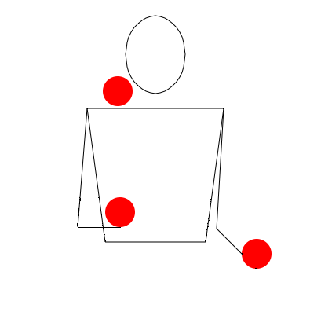

Was ist eine Variable?
In computer programming, a variable is a symbolic name given to some known or unknown quantity or information, for the purpose of allowing the name to be used independently of the information it represents. A variable name in computer source code is usually associated with a data storage location and thus also its contents, and these may change during the course of program execution.
Definition in Puttkamer (1990):
Bei jeder Art von Datenverarbeitung beziehen sich die Anweisungen auf direkte Daten, die eingegeben werden oder auf Variable, die man sich vorstellen kann als mit Namen versehen Behälter für Daten. Jede Zuweisung an eine Variable füllt Daten in diesen Behälter, und der Wert einer Variablen ist der Inhalt dieses Behälters. So ist z. B. der Effekt einer Anweisung $A:= 3 + 7$: Bilde mit den direkt eingegebenen Daten 3 und 7 die Summe 10 und weise diesen Wert der Variablen mit Namen A zu. Ein [sic!] anschließende Anweisung "drucke A" druckt den Inhalt des Behälters A aus, den Wert der Variablen A, hier 10.
Vereinfachte Begriffserklärung
Deklaration von Variablen in Python
>>> VARIABLE = VALUE
>>> VAR1, VAR2, ... = VAL1, VAL2, ...
>>> VAR1, \*VAR2 = VAL1, VAL2, VAL3, ...
>>> VARIABLE = VAL1, VAL2, ...
>>> a = 1
>>> b, c = 2, 3
>>> d, \*e = 4, 5, 6
>>> f = 7, 8, 9
>>> print(myvar, myvar1, myvar2, myvar3, myvar4, myvar5)
1 2 3 4 [5, 6] (7, 8, 9)
Struktur von Variablennamen
>>> Name = 1
>>> Name_von_mir = 1
>>> Name2 = 1
>>> 2Name = 1
SyntaxError: invalid syntax
Programmierbeispiele
>>> print("Variable")
Variable
>>> Variable = "Variable"
>>> print(Variable)
Variable
>>> Variable
'Variable'
>>> Variable == Variable
True
Variable == 'Variable'
True
>>> var1, var2 = 2, 3
>>> print(var1,"und", var2,"macht",var1 + var2)
2 und 3 macht 5
Fehlermeldungen
>>> test = 1,2
>>> test = bla
Traceback (most recent call last):
File "<stdin>", line 1, in <module>
NameError: name 'bla' is not defined
>>> print(test1)
traceback (most recent call last):
file "<stdin>", line 1, in <module>
nameerror: name 'test1' is not defined
>>> test1 = 2
>>> test2 = "2"
>>> test1 + test2
Traceback (most recent call last):
File "<stdin>", line 1, in <module>
TypeError: unsupported operand type(s) for +: 'int' and 'str'
Deklaration von Variablen in JavaScript
> VARIABLE = 1;
> var VAR = 1;
> VAR1 = 1; VAR2 = 2;
> var VAR1, VAR2;
> VAR1 = 1; VAR2 = 1;
Das Schlüsselwort "var" wird in JavaScript verwendet, um sicherzustellen, dass Variablen in Funktionen lokal definiert werden. Grundsätzlich sollte man (da wir ohnehin nicht global definieren sollten) darauf achten, immer das Schlüsselwort "var" einer Variablendeklaration vorwegzustellen.
Struktur von Variablennamen
> var Name = 1
> var Name_von_mir = 1
> var Name2 = 1
> var 2Name = 1
SyntaxError: identifier starts immediately after numeric literal
Programmierbeispiele
> var myvar = 1;
> var myvar2 = 2;
> var myvar3, myvar4, myvar5;
> myvar3 = 3; myvar4 = 4; myvar5 = 5;
> [myvar1, myvar2, myvar3, myvar4, myvar5].map(function(x){return x+x});
[ 2, 4, 6, 8, 10 ]
Fehlermeldungen
> var a = 10;
> var b = '11';
> a + a;
20
> b + b;
1111
> a + b
1011
> a - "10";
0
> a * "10";
100
Vorsicht mit den Operatoren +, -, * und / in JavaScript! Ihr Verhalten kann unberechenbar sein, da im Gegensatz zu Python kein Typcheck durchgeführt wird!
Formal bezeichnet ein Datentyp in der Informatik die Zusammenfassung von Objektmengen mit den darauf definierten Operationen. Dabei werden durch den Datentyp des Datensatzes unter Verwendung einer so genannten Signatur ausschließlich die Namen dieser Objekt- und Operationsmengen spezifiziert. Ein so spezifizierter Datentyp besitzt noch keine Semantik. Die weitaus häufiger verwendete, aber speziellere Bedeutung des Begriffs Datentyp stammt aus dem Umfeld der Programmiersprachen und bezeichnet die Zusammenfassung konkreter Wertebereiche und darauf definierten Operationen zu einer Einheit. Zur Unterscheidung wird für diese Datentypen in der Literatur auch der Begriff Konkreter Datentyp verwendet. Für eine Diskussion, wie Programmiersprachen mit Datentypen umgehen, siehe Typisierung.
Vereinfachte Begriffserklärung
Allgemeines
In Python werden Datentypen bei der Variablendeklaration nicht explizit angegeben, sondern aufgrund der Struktur der Werte, die den Variablen zugewiesen werden, automatisch bestimmt. Python weist eine Vielzahl von Datentypen auf und ermöglicht aufgrund seiner objektorientierten Ausrichtung auch die Erstellung eigener komplexer Datentypen.
Wichtigste Datentypen in Python
2, 3, -5, 0)1.2, 1.222, -0.5, -2.5)"Friedrich", "Nietzsche", "孔子")["Friedrich", "2", 1998, -0.5])("Friedrich", "2", 1998, -0.5)){1:1, "Friedrich" : "Nietzsche"})Überprüfen
>>> a, b, c, d = 1, "2", 2.5, [1,2]
>>> type(a)
<class 'int'>
>>> print(type(b), type(c))
<class 'int'> <class 'str'>
>>> isinstance(d, list)
True
>>> isinstance(d, (int,str))
False
Programmbeispiele
>>> a, b, c = 1, "2", 3.5
>>> words = ["apfel", "wurst", "gurke"]
>>> nahrungs_typ = {"apfel": "vegan", "wurst": "carnivor", "gurke": "vegan"}
>>> b + b
'22'
>>> a / c
-2.5
>>> type(a/c)
<class 'float'>
>>> for word in words: print(word, nahrungs_typ[word])
apfel vegan
wurst carnivor
gurke vegan
>>> print(words[1])
wurst
Allgemeines
Auch in JavaScript werden Datentypen bei der Deklaration nicht explizit angegeben, sondern dynamisch bestimmt. Auch in JavaScript können komplexe Datentypen aufgrund der Möglicheit, objekt-orientiert zu programmieren, erstellt werden. Im Gegensatz zu Python ist es viel leichter, Operationen auf unterschiedlichen Datentypen durchzuführen, was problematisch werden kann, da die erwarteten Ergebnisse sich leicht unterscheiden können, wenn ein Programm nicht sorgfälgit geprüft wird.
Wichtigste Datentypen in Javascript
1, 1.5)"hallo", 'welt')[1, "2", -3]){0:1, 1:2})Beachten Sie, dass es sich bei dem Datentyp "array" offiziell um eine spezielle Form des sehr abstrakten Datentypen "object" handelt, weshalb ein Type-Check auch für einen Array immer den Wert "object" zurückliefern wird.
Überprüfen
> var a = 1;
> var b = 1.5;
> var c = "1";
> var d = [a, b, c];
> var e = {0 : a, 1 : b, 2 : c};
> typeof a;
number
> typeof b;
number
> typeof c;
string
> typeof d;
object
> typeof e;
object
Programmbeispiele
> var a = 1;
> var b = 1.5;
> var c = "1";
> var d = [a, b, c];
> var e = {0 : a, 1 : b, 2 : c};
> a == d[0];
True
> a === d[0];
True
> e[0] = 2
for (key in e) {alert(key+' '+e[key])}
Als Kaskade wird das am einfachsten zu erlernende Jongliermuster mit einer ungeraden Anzahl von Gegenständen (Zum Beispiel: Bällen, Keulen oder Ringen) bezeichnet. Dabei wird mit zwei Gegenständen in einer Hand und einem in der anderen Hand angefangen. Der erste Wurf wird durch die Hand ausgeführt, in der zwei Gegenstände sind. Wenn der Gegenstand den höchsten Punkt erreicht, wird der Gegenstand aus der anderen Hand losgeworfen (und zwar unter dem zuvor geworfenen Gegenstand hindurch). Dadurch ist diese Hand frei, um den ersten Gegenstand zu fangen. Wenn der zweite Gegenstand am höchsten Punkt angekommen ist, wird der dritte Gegenstand losgeworfen (mit der Hand, die auch den ersten Gegenstand geworfen hat) und so weiter.

# definiere das jongliermuster
JonglierMuster = """
\n\n\n\n\n\n\n\n\n\n\n\n\n\n\n\n\n\n\n\n\n\n\n\n\n\n\n\n\n\n\n\n\n\n\n\n\n\n
Dreiball-Jonglage
+-------------------+
| (L) (R) |
| |
| |
| |
| |
||(l)| |(r)||
| | | |
+-------------------+
"""
# deklariere die gegenstände
gegenstand1 = '(1)'
gegenstand2 = '(2)'
gegenstand3 = '(3)'
# halte fest, welcher gegenstand gerade wo ist
RechteHand = gegenstand2
LinkeHand = gegenstand3
RechtsOben = gegenstand1
LinksOben = ' '
# Jetzt kann es losgehen. Das Programm startet, indem wir die Entertaste
# drücken.
input("Los geht's!")
# Wir führen eine Schleife aus (Details dazu kommen später)
i = 0
while i < 20:
# wir deklarieren eine variable snapshot, die in jeweils vier schritten
# durch das derzeit vorliegende jongliermuster ersetzt wird
SnapShot = JonglierMuster
SnapShot = SnapShot.replace('(R)',RechtsOben)
SnapShot = SnapShot.replace('(L)',LinksOben)
SnapShot = SnapShot.replace('(l)',LinkeHand)
SnapShot = SnapShot.replace('(r)',RechteHand)
# Wir benutzen nicht print, um das ganze auszugeben, sondern input(),
# weil damit immer gleichzeitig auch eine Pause verbunden ist (erst wenn
# man Enter drückt geht es weiter). (in Python2 brauchen wir "raw_input")
input(SnapShot)
# jetzt passen wir die variablen an, wobei wir schauen, wo gerade der
# ball ist.
if RechtsOben == ' ':
RechtsOben = LinkeHand
LinkeHand = ' '
i += 1
elif RechteHand == ' ':
RechteHand = RechtsOben
RechtsOben = ' '
i += 1
elif LinkeHand == ' ':
LinkeHand = LinksOben
LinksOben = ' '
i += 1
elif LinksOben == ' ':
LinksOben = RechteHand
RechteHand = ' '
i += 1
# Wenn alles geschafft ist, kann man schon mal darauf hinweisen, dass das
# ziemlich anstrengend ist...
input("Puh, war das anstrengend!")
Dies ist eine Python-2 Version, das heißt, dass die Funktion "input" durch "raw_input" ersetzt werden muss:
HTML Kode
<html>
<head>
Kaskade Demo
</head>
(1)
(2)
(3)
...
CSS Kode
.white {
color: red;
width: 50px;
height: 50px;
background: lightgray;
}
.hand {
border-bottom: 10px solid Orange;
}
.right {
border-right: 10px solid Orange;
}
.left {
border-left: 10px solid Orange;
}
.ball {
font-size: 20px;
color: Crimson;
font-weight: bold;
text-align: center;
background: lightgray;
}
JavaScript Kode
function nextCatch() {
// get items for all the values in the cells
var ro = document.getElementById('ro');
var lo = document.getElementById('lo');
var ru = document.getElementById('ru');
var lu = document.getElementById('lu');
console.log(ro.innerHTML, lo.innerHTML);
// get emtpy value
if (ro.innerHTML == '') {
ro.innerHTML = lu.innerHTML;
lu.innerHTML = '';
}
else if (lo.innerHTML == '') {
lo.innerHTML = ru.innerHTML;
ru.innerHTML = '';
}
else if (lu.innerHTML == '') {
lu.innerHTML = lo.innerHTML;
lo.innerHTML = '';
}
else if (ru.innerHTML == '') {
ru.innerHTML = ro.innerHTML;
ro.innerHTML = '';
}
}
DEMO
sys.exit()
Ende der ersten Sitzung
Vorherige Sitzung